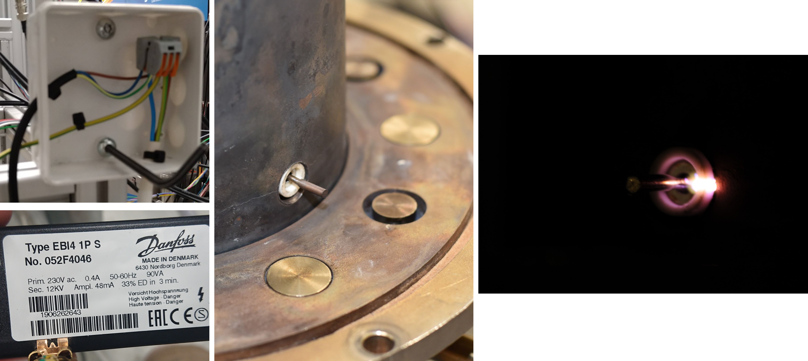

One of the two mini electrical projects which I have embarked on. The first of which is the spark ignition system, designed using commerically available ignitor and transformer.
A big shout-out to Stein from Energy and Process Engineering, NTNU for helping out!

Electronic control box
The second mini electrical project: a control box constructed out of multiple potentiometers to allow fine tuning of voltage input to multiple lab equipment (photomultipliers). It is designed to be plug-and-play, so that it is user-friendly!
Also helped to save a lot of money towards buying even fancier diagnostics equipment.